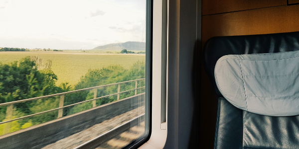
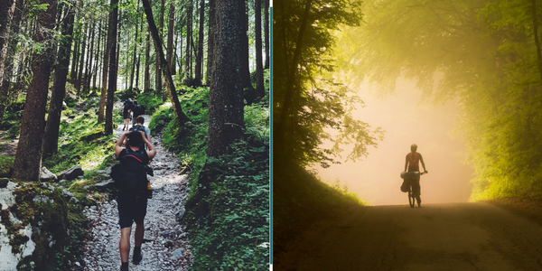
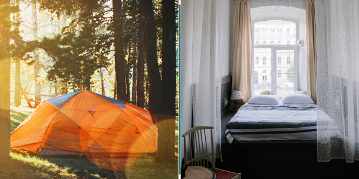

Partez de votre gare la plus proche
Recevez votre trip secret dans votre boîte email 3 jours avant votre départ. Démarrez de la gare la proche de chez vous. Relaxez-vous et préparez-vous à explorer !

Explorez plein de nouveaux endroits
Suivez votre itinéraire unique et découvrez des endroits inconnus sur votre chemin. Nous sommes là pour vous. La route est à vous. Profitez-en !
